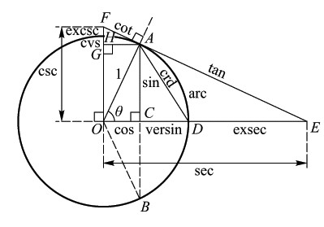

数海拾贝13
所有的三角函数都可以用单位圆和它的切线来表示。所谓单位圆是半径为1的圆，它的切线只跟圆的一点相交（称为切点）。见下图，OA是半径（OA=1），直线AE切圆于A 点，OA 和水平线 OE 交于圆心 O，角 AOD（或 AOE）=θ。那么，
角 AOD 的正弦，sinθ=AC，
角 AOD 的余弦，cosθ=OC， 角 AOD 的正切，tanθ=AE，
角 AOD 的余切，cotθ=AF，
角 AOD 的正割，secθ=OE，
角 AOD 的余割，cscθ=OF， 等等。

阿耶波多之前，三角关系是以角 AOB（两倍于角 Ȭ）所对应的弦长 AB 来表达的。阿耶波多是现代三角函数的开启人。